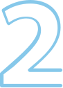

Пісок
у нирках
це початкова форма нефролітіазу, або сечокам’яної хвороби
-
Гострий біль у нирках при сечовипусканні
-
Прояви нудоти та блювотиння
-
Кров і частинки піску в сечі
ПРИЧИНИ
які провокують
виникнення
сечокам’яної
хвороби
Спадкова
схильність

Проблеми
з нирками і органами

Незбалансований раціон харчування
Заходами профілактики циститу є наступні дії
Обмежити солодке харчування
Виключити вживання алкоголю
Правильний раціон харчування
Регулярний прийом питної води
Бути фізично
активними
Купити